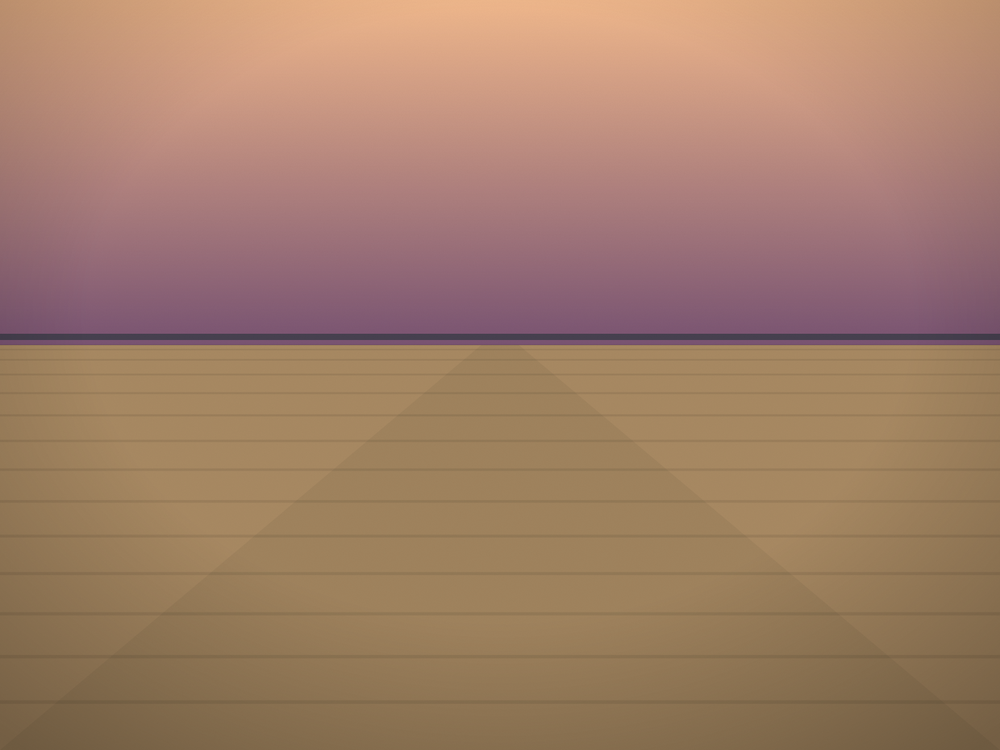

The Rehoboth Beach Jazz Festival is in its 37th year, and it runs Thursday through Sunday this week: Oct. 15 to 18.
The festival dates to 1990, and this year's edition spreads across five stages in Rehoboth Beach, Lewes and Dewey Beach, including the Rehoboth Beach Convention Center.
Who is playing
The festival books nationally known jazz, smooth jazz and R&B artists. This year's announced headliners include:
- Brian Culbertson
- Boney James
- Damien Escobar
- Najee
- Gerald Albright
- Walter Beasley
Stanley Jordan and Paul Taylor are among the many other artists on the bill.
How to plan it
Four days and five stages means the festival is better approached as a set of individual shows than as a single event. The festival's own schedule and tickets page lists every performance by day, venue and time; it is the only place to plan from, and the one place for prices, which this story deliberately does not quote.
The City of Rehoboth Beach lists the festival on its own events calendar for the same Oct. 15–18 dates.
The rest of October
The jazz festival is the middle of a busy month at the coast. A week later, Rehoboth's Sea Witch weekend brings a first-year Community Fair for local nonprofits on Friday, Oct. 23, and the costume parade on Saturday, Oct. 24. Times for Sea Witch had not been confirmed when this was published; check the Rehoboth Beach-Dewey Beach Chamber of Commerce before you plan around them.
Sources: The Rehoboth Beach Jazz Festival's schedule and tickets pages (rehobothjazz.com); the City of Rehoboth Beach's events calendar listing (rehobothbeachde.gov); the Cape Gazette's report "Rehoboth Beach Jazz Festival to return Oct. 15–18" and WMDT's Discover Delmarva Arts feature, which both report the 2026 headliners; the Rehoboth Beach-Dewey Beach Chamber's Sea Witch listing for the Oct. 23 and 24 dates. Delaware Beach Finds did not attend. Line-ups and times can change; the festival's own schedule is the authority.